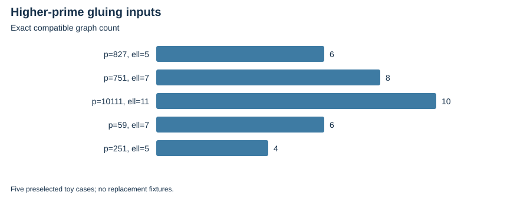

TWIST ROUTES 1–3 · E20 · 2026-10-23 · LOCAL BOUNDED EVIDENCE
The necessary module filter covers 75 main rows at ell=5,7,11,13,17, with 15 ell=3 regression rows. It is not a geometric quotient test.
Five selected toy cases now have actual torsion bases, primitive Weil pairings, Frobenius actions and every compatible Galois-stable graph, checked in independent Rust and PARI arithmetic. The first constructor branch skipped the pairing test; its five failures are retained, and the corrected same-seed bounded replay passes.
| Source | ell | Extension degree | Points per curve | Compatible graphs |
|---|---|---|---|---|
| p=827 | 5 | 8 | 25 | 6 |
| p=751 | 7 | 12 | 49 | 8 |
| p=10111 | 11 | 10 | 121 | 10 |
| p=59 | 7 | 6 | 49 | 6 |
| p=251 | 5 | 4 | 25 | 4 |

No ell>=5 quotient, polarized genus-two model or induced maps are constructed. No actual higher-prime NIST construction is claimed.
Verified locally on the same host; complete raw publication is pending artifact-store access. No calibrated speedup, novelty, independent-host replay or NIST DLP is claimed. Original acceptance criteria remain open.
Rust 1.90.0, PARI/GP 2.17.2, one worker except the three-cell E25 orchestration; isolation L0. Caps and limits are in each source-frozen protocol and receipt. Counts are exact finite records; no wall time is admitted. Stochastic uncertainty is not inferred from repeated configurations or targets.
| Receipt / phase | UTC start | Exit | Source pin |
|---|---|---|---|
| higher-icv1-fp10-t5-192cb216-l5-20261023-v1-adjudication.json | 2026-10-23T16:31:08Z | 1 | 2ef53b923661 |
| higher-icv1-fp10-t5-192cb216-l5-20261023-v1-gp.json | 2026-10-23T16:31:07Z | 0 | 2ef53b923661 |
| higher-icv1-fp10-t5-192cb216-l5-20261023-v1-native-verify.json | 2026-10-23T16:31:08Z | 1 | 2ef53b923661 |
| higher-icv1-fp10-t5-192cb216-l5-20261023-v2-adjudication.json | 2026-10-23T16:40:53Z | 0 | cc313c23e9b1 |
| higher-icv1-fp10-t5-192cb216-l5-20261023-v2-gp.json | 2026-10-23T16:40:53Z | 0 | cc313c23e9b1 |
| higher-icv1-fp10-t5-192cb216-l5-20261023-v2-native-verify.json | 2026-10-23T16:40:53Z | 0 | cc313c23e9b1 |
| higher-icv1-fp10-tm21-b87c79a9-l7-20261023-v1-adjudication.json | 2026-10-23T16:31:08Z | 1 | 2ef53b923661 |
| higher-icv1-fp10-tm21-b87c79a9-l7-20261023-v1-gp.json | 2026-10-23T16:31:08Z | 0 | 2ef53b923661 |
| higher-icv1-fp10-tm21-b87c79a9-l7-20261023-v1-native-verify.json | 2026-10-23T16:31:08Z | 1 | 2ef53b923661 |
| higher-icv1-fp10-tm21-b87c79a9-l7-20261023-v2-adjudication.json | 2026-10-23T16:40:54Z | 0 | cc313c23e9b1 |
| higher-icv1-fp10-tm21-b87c79a9-l7-20261023-v2-gp.json | 2026-10-23T16:40:54Z | 0 | cc313c23e9b1 |
| higher-icv1-fp10-tm21-b87c79a9-l7-20261023-v2-native-verify.json | 2026-10-23T16:40:54Z | 0 | cc313c23e9b1 |
| higher-icv1-fp14-t33-d98086ae-l11-20261023-v1-adjudication.json | 2026-10-23T16:31:08Z | 1 | 2ef53b923661 |
| higher-icv1-fp14-t33-d98086ae-l11-20261023-v1-gp.json | 2026-10-23T16:31:08Z | 0 | 2ef53b923661 |
| higher-icv1-fp14-t33-d98086ae-l11-20261023-v1-native-verify.json | 2026-10-23T16:31:08Z | 1 | 2ef53b923661 |
| higher-icv1-fp14-t33-d98086ae-l11-20261023-v2-adjudication.json | 2026-10-23T16:40:55Z | 0 | cc313c23e9b1 |
| higher-icv1-fp14-t33-d98086ae-l11-20261023-v2-gp.json | 2026-10-23T16:40:55Z | 0 | cc313c23e9b1 |
| higher-icv1-fp14-t33-d98086ae-l11-20261023-v2-native-verify.json | 2026-10-23T16:40:55Z | 0 | cc313c23e9b1 |
| higher-icv1-fp6-tm7-fc20da94-l7-20261023-v1-adjudication.json | 2026-10-23T16:31:08Z | 1 | 2ef53b923661 |
| higher-icv1-fp6-tm7-fc20da94-l7-20261023-v1-gp.json | 2026-10-23T16:31:08Z | 0 | 2ef53b923661 |
| higher-icv1-fp6-tm7-fc20da94-l7-20261023-v1-native-verify.json | 2026-10-23T16:31:09Z | 1 | 2ef53b923661 |
| higher-icv1-fp6-tm7-fc20da94-l7-20261023-v2-adjudication.json | 2026-10-23T16:40:56Z | 0 | cc313c23e9b1 |
| higher-icv1-fp6-tm7-fc20da94-l7-20261023-v2-gp.json | 2026-10-23T16:40:56Z | 0 | cc313c23e9b1 |
| higher-icv1-fp6-tm7-fc20da94-l7-20261023-v2-native-verify.json | 2026-10-23T16:40:56Z | 0 | cc313c23e9b1 |
| higher-icv1-fp8-tm5-23216e9c-l5-20261023-v1-adjudication.json | 2026-10-23T16:31:09Z | 1 | 2ef53b923661 |
| higher-icv1-fp8-tm5-23216e9c-l5-20261023-v1-gp.json | 2026-10-23T16:31:09Z | 0 | 2ef53b923661 |
| higher-icv1-fp8-tm5-23216e9c-l5-20261023-v1-native-verify.json | 2026-10-23T16:31:09Z | 1 | 2ef53b923661 |
| higher-icv1-fp8-tm5-23216e9c-l5-20261023-v2-adjudication.json | 2026-10-23T16:40:56Z | 0 | cc313c23e9b1 |
| higher-icv1-fp8-tm5-23216e9c-l5-20261023-v2-gp.json | 2026-10-23T16:40:56Z | 0 | cc313c23e9b1 |
| higher-icv1-fp8-tm5-23216e9c-l5-20261023-v2-native-verify.json | 2026-10-23T16:40:57Z | 0 | cc313c23e9b1 |
| higher-torsion-input-20261023-v1.json | 2026-10-23T16:29:15Z | 0 | 2ef53b923661 |
| higher-torsion-input-20261023-v2.json | 2026-10-23T16:40:53Z | 0 | cc313c23e9b1 |
| module-20261023-v1-adjudication.json | 2026-10-23T01:44:28Z | 0 | 4d4218ec3410 |
| module-20261023-v1-gp-v1.json | missing | 0 | missing |
| module-20261023-v1.json | 2026-10-23T01:18:03Z | 0 | ad5e3b4763af |
Native assessment: ../../execution-v2/assessment-20261023-v3/ASSESSMENT.json. Raw members: runs/module-20261023-v1, runs/higher-*-v1 and -v2, input and replay directories. Source/input/binary hashes and exact argv: E20-receipts.json and ../../execution-v2/receipts/.